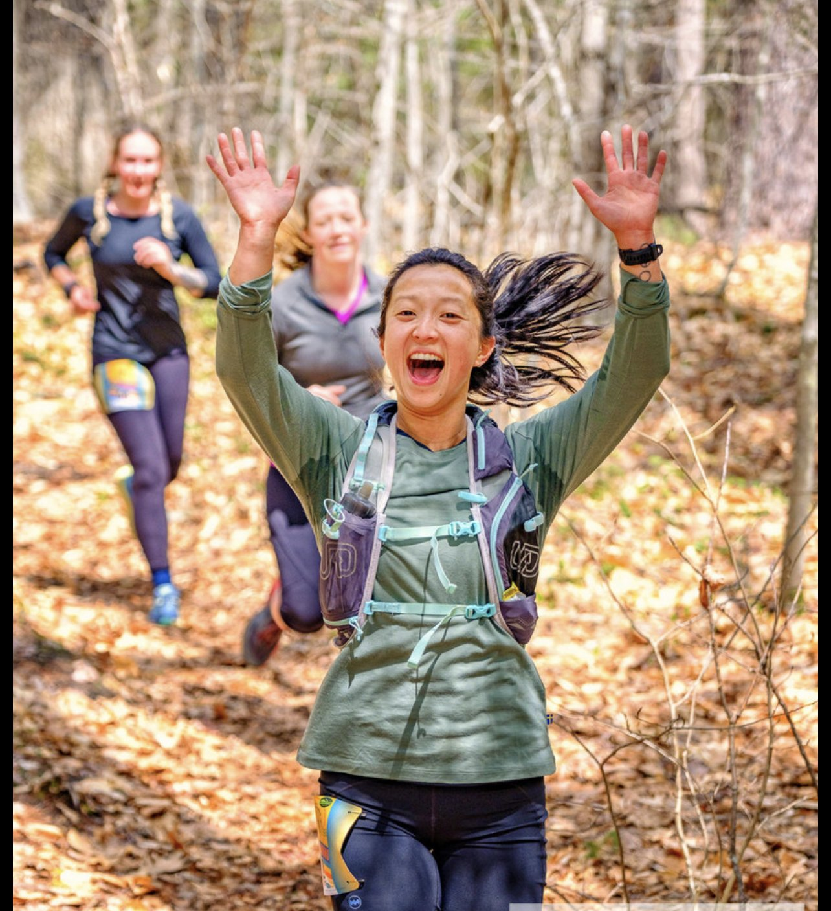

Events
Join Women's Running Club for our upcoming events! We offer a variety of opportunities for runners of all levels to participate in fun and supportive events. Here are some of the events we have coming up: Annual Women's 5K: Our signature event! Join us for a 5K race that celebrates women's running and raises funds for a local charity. Open to all runners, walkers, and joggers. Trail Running Series: Get off the pavement and onto the trails with our Trail Running Series! We offer a variety of distances and terrains, from beginner-friendly to challenging. Speed Workouts: Looking to improve your running speed? Join us for weekly speed workouts, led by experienced coaches. All levels welcome. Social Runs: Running is more fun with friends! Join us for weekly social runs, followed by coffee or brunch. Community Events: We also participate in local races and events throughout the year. Join us for a race, a volunteer opportunity, or a fun outing. Check out our calendar for upcoming events and registration information. We look forward to running with you! 